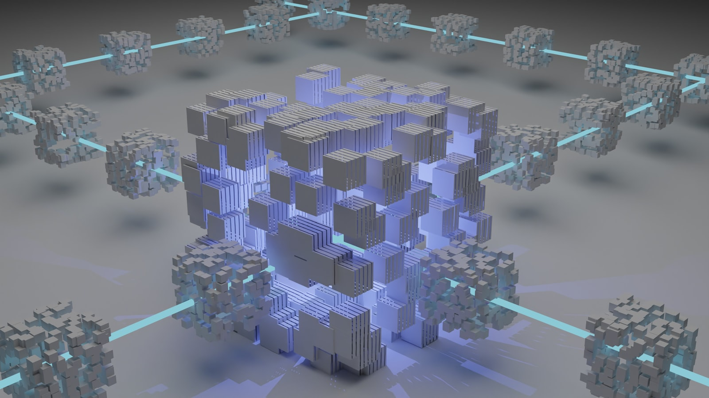

Connect your warehouse
Point Northsignal at Snowflake, Databricks, BigQuery, or Redshift. It reads query history and metadata only — nothing to install in your data plane.
 See it live
Watch auto-coverage catch a bad merge in real time
A 30-minute walkthrough: connect a sample warehouse, watch monitors auto-generate, and stop a bad merge before it ships.
Book a demo
See it live
Watch auto-coverage catch a bad merge in real time
A 30-minute walkthrough: connect a sample warehouse, watch monitors auto-generate, and stop a bad merge before it ships.
Book a demo
// PIPELINE-NATIVE DATA OBSERVABILITY
Northsignal wires monitoring into your warehouse and dbt graph from the first run — freshness, volume, schema, and distribution coverage auto-generated, with a catch-before-ship gate that stops bad data pre-merge, not the next morning.

Trusted on the modern data stack
Dashboards tell you something broke after it already reached a customer report. Northsignal moves the check upstream — into the pipeline, before the merge — so the number is trusted by the time anyone reads it.


Trusted by data teams at Aperture Labs, Northwind Freight, Cobalt Health, Meridian Pay, and Solene Retail.
How it works
Point Northsignal at Snowflake, Databricks, BigQuery, or Redshift. It reads query history and metadata only — nothing to install in your data plane.
Northsignal reads your warehouse and dbt graph and generates freshness, volume, schema, and distribution monitors on the first run — no checks to hand-author.
The catch-before-ship gate runs in-pipeline on every dbt run and pre-merge, so broken data is stopped before it reaches a dashboard or report.
The platform
Northsignal reads your warehouse and dbt graph and generates freshness, volume, schema, and distribution monitors on the first run — no checks to hand-author.
Detection runs in-pipeline on every dbt run and pre-merge, so broken data is stopped before it reaches a dashboard, feature store, or customer report.
Every incident ties back to the upstream model, source, and the commit that caused it — so on-call resolves at the root instead of triaging the symptom.
The proof
See it in action
Every anomaly opens an incident with the impacted-asset blast radius, the owner, and the upstream commit — routed to Slack or PagerDuty the moment it trips, pre-merge.
Column-level lineage maps every monitored table to its sources, models, and the change that broke it, so the on-call engineer resolves the cause instead of chasing the symptom.
Pricing
Starter
For the first warehouse and the first monitors.
$0
Team
All monitor types, lineage, and contracts.
$1,200
Enterprise
VPC deployment, ML baselines, and a dedicated SLA.
Custom
What data teams say
We went from 40 hours of monthly firefighting to a 4-minute median detect. The pager finally got quiet.
Auto-coverage replaced 600 hand-authored dbt tests on day one. We stopped maintaining checks and started shipping.
It caught a schema drift in a payments model pre-merge and prevented a reconciliation error across millions of transactions.
Rated 4.8 / 5 across 340+ verified G2 reviews in the Data Observability category.
Good to know
Book a 30-minute walkthrough with a solutions engineer — connect a sample warehouse, watch monitors auto-generate, and stop a bad merge in real time. Every demo includes a 14-day full-feature Team trial, no credit card.
